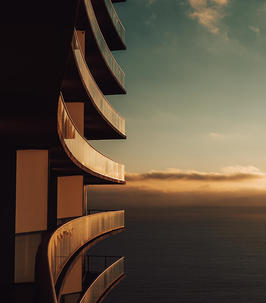
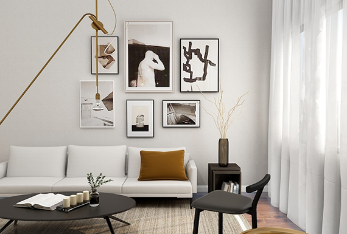
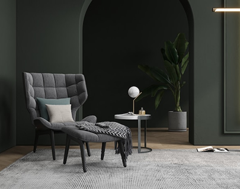
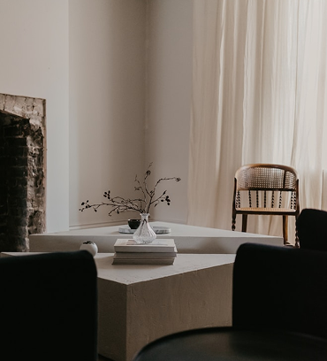
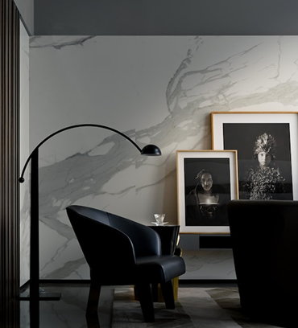
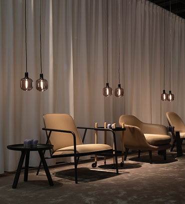

Do rabisco à obra: aqui todo trabalho é mostrado por inteiro
Juan [Sobrenome]
Arquiteto · [Cidade, UF]
Projetos residenciais

Olá, meu nome é Juan e eu projeto casas pra morar: casa é lar, não vitrine.
Boa arquitetura não é privilégio. As técnicas mais modernas de projeto servem justamente pra fazer mais com menos: aproveitar a luz que já existe, ventilar sem ar-condicionado, escolher o material certo pro clima e pro bolso. Quem tem pouco pra investir é quem mais ganha com um bom projeto.
Cada casa que o Juan desenha nasce de uma conversa, não de um catálogo. O projeto organiza o essencial e deixa espaço de sobra pro morador dar o próprio toque: a parede que vai ganhar cor, o canto que vira jardim, a estante que a família monta junta. A casa fica pronta, mas nunca fica fechada.
O resultado que ele busca é simples de descrever e difícil de fazer: um lugar onde a pessoa entra e sente que pode confiar. Que aquilo é dela.
Tudo começa com uma conversa longa: como a família vive, o que incomoda na casa de hoje, quanto dá pra investir. O pedido vira uma lista de necessidades reais, com prioridades claras.
Por quê: projeto bom resolve a vida de quem mora, não a vaidade de quem desenha. Sem escuta, o resto é chute.
As necessidades viram forma: sketches à mão, estudos de volume, primeiras ideias de implantação. Nada é definitivo, e essa é a graça: errar barato no papel pra acertar na obra.
Por quê: mudar uma parede a lápis custa zero. Mudar na obra custa caro. Aqui a família ainda muda de ideia à vontade.
O esboço aprovado vira planta: cada ambiente com medida, o caminho do sol marcado, a ventilação cruzada resolvida, os fluxos testados no desenho. O projeto ganha precisão.
Por quê: luz e vento são de graça. Uma planta bem orientada economiza conta de luz pela vida inteira da casa.
Detalhamento completo pra obra: pranchas técnicas, especificação de materiais, alternativas de acabamento por faixa de preço e um caderno que o pedreiro entende.
Por quê: obra sem detalhamento vira improviso, e improviso é o jeito mais caro de construir. O projeto protege o dinheiro de quem constrói.
Como um pedido vira uma casa. Este é um projeto de exemplo, fase a fase, mostrando o que o cliente pediu e o que cada decisão de projeto respondeu.
[Exemplo] Um casal com uma filha pequena, terreno estreito de 7 metros de frente, orçamento fechado. O pedido: dois quartos, um quintal que a criança use de verdade e uma cozinha que converse com a sala, porque quem cozinha não quer ficar isolado da visita.
O orçamento não muda no meio do caminho: ele vira premissa de projeto. Todas as escolhas das fases seguintes partem desse teto, e não o contrário.
[Exemplo] Nos sketches, a casa se alonga pro fundo do terreno e abre pro norte. A sala e a cozinha viram um ambiente só, na frente do quintal, pra quem cozinha enxergar a filha brincando.
O cliente pediu "quintal que a criança use". A resposta não foi um quintal maior, foi posição: área de estar e quintal no mesmo eixo visual. Custa zero e resolve o pedido.
[Exemplo] Na planta, os quartos vão pro lado da sombra e os ambientes de estar pro lado do sol da manhã. Janelas alinhadas criam ventilação cruzada: o vento entra pela sala e sai pelo corredor, sem precisar de ar-condicionado.
Conforto térmico aqui não é equipamento, é orientação. A família economiza na conta de luz todo mês, pra sempre. É a técnica moderna trabalhando pra quem tem orçamento apertado.
[Exemplo] O caderno de obra especifica cada material com uma alternativa mais em conta de mesmo desempenho. Algumas escolhas ficam de propósito em aberto: a cor das paredes, o revestimento do quintal, a marcenaria que pode vir depois.
A casa é entregue resolvida, mas não fechada. O que é estrutura, o projeto garante. O que é identidade, fica com a família: é ela quem termina a casa, no seu tempo e do seu jeito.


Um recanto bem resolvido não precisa de metro quadrado extra. Precisa de luz, de cor e de um lugar certo pra sentar.

Luz natural bem trabalhada troca lâmpada acesa por conforto o dia inteiro, sem custo nenhum de energia.

O projeto entrega a superfície pronta e a família decide o que vai nela. A casa ganha cara com o tempo.

Iluminação pontual muda a sensação de um espaço mais do que qualquer revestimento caro.
O orçamento da família é premissa, não obstáculo. Um bom projeto cabe no dinheiro que existe, sem fingir que ele é maior.
Luz natural, ventilação cruzada, material certo pro clima. O que há de mais moderno em projeto serve pra economizar, não pra encarecer.
A casa sai resolvida, mas nunca fechada. Cada família termina o próprio lar, no seu tempo, do seu jeito.
Toda casa começa numa conversa. Sem compromisso: conta o que você precisa e o Juan te diz, com franqueza, o que um projeto pode fazer por você.